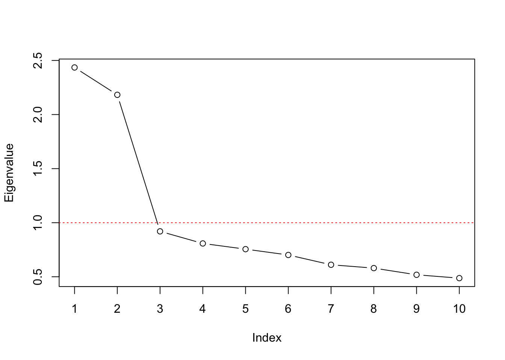

Chapter 2 Factor Analysis
Statistically speaking the main goal of factor analysis is to describe the covariance structure among many variables in terms of a few underlying, but unobservable random quantities, called factors. This usually happens by assuming that the supposed variables can be organized into (contextually meaningful) groups. The variables in a given group are assumed to be highly correlated and thus represent or are related to a latent construct. While the correlation within a group of variables is high, the correlation between different groups is expected to be low. Following that argumentation it should be possible to condense the information from multiple observed variables within a group into a single unobserved factor variable. While Explanatory Factor Analysis (EFA) aims at finding the mentioned groups Confirmatory Factor Analysis (CFA) aims at confirming an a priori hypothesized variable grouping constellation.
While EFA and CFA serve different purposes when doing research, their foundation meaning the model formulation, the estimation and the derivation of quantities of interest follows the same scheme, which will be presented below.
2.1 Foundations
\[ X_1 - \mu_1 = l_{11} F_1 + l_{12} F_2 + \ldots + l_{1m} F_m + \epsilon_1 \\ X_2 - \mu_2 = l_{21} F_1 + l_{22} F_2 + \ldots + l_{2m} F_m + \epsilon_2 \\ \vdots \\ X_p - \mu_p = l_{p1} F_1 + l_{p2} F_2 + \ldots + l_{pm} F_m + \epsilon_p \] Although the equations above seem to be related to multiple regression equations the fact that all quantities on the right hand side are unobseved (in fact only \(X\) is observed) distinguishes this factor model from regression problems. The factor analysis model can also be written in matrix notation, which allows for easier derivation of some of the following procedures and thus should be considered valuable as well.
\[ \underset{p \times 1}{\boldsymbol X - \boldsymbol \mu} = \underset{p \times m}{\boldsymbol L} \; \underset{m \times p}{\boldsymbol F} + \underset{p \times 1}{\boldsymbol \epsilon} \]
\[ \boldsymbol \Sigma = Cov(\boldsymbol X) = \underset{\;\\Communality}{\boldsymbol L \boldsymbol L^T} + \underset{\;\\Uniqueness}{\boldsymbol \Psi} \] ## Estimation
2.2 Basic Example
ski <- data.frame(skiers = paste0("S", c(1:5)),
cost = c(32, 61, 59, 36, 62),
lift = c(64, 37, 40, 62, 46),
depth = c(65, 62, 45, 34, 43),
powder = c(67, 65, 43, 35, 40))R <- cor(ski[ ,-1]) # Calculating correlation Matrix
V <- eigen(R)$values # Calculating eigenvalues
V## [1] 2.016305104 1.941513814 0.037812306 0.004368776Remember that the Eigenvalue-Decomposition
\[ R = V L V^T\] Reconstructing the correlation Matrix with given Eigenvalues and eigenvectors
## [,1] [,2] [,3] [,4]
## [1,] 1.00000000 -0.95299048 -0.05527555 -0.12999882
## [2,] -0.95299048 1.00000000 -0.09110654 -0.03624823
## [3,] -0.05527555 -0.09110654 1.00000000 0.99017435
## [4,] -0.12999882 -0.03624823 0.99017435 1.00000000Manual Scree plot
2.3 Basic Factor Analysis in R
2.3.1 Data Description
2.3.2 The factanal() Function
2.3.3 Selecting numbers of Factors
# Calculate Correlation Matrix, Eigenvalues & Proportion of Variance
R <- cor(questionnaire)
eigval <- eigen(R)$values
proptotvar <- eigval / sum(eigval)# Screeplot
plot(eigval, type = "b", ylab = "Eigenvalue", xlab="Index", xaxt="n")
axis(1, at=1:length(eigval))
abline(h=1, lty = "dotted", col="red")
df <- data.frame(Eigenvalue = eigval,
Var=proptotvar,
sumVar=cumsum(proptotvar))
knitr::kable(df, digits=4, booktabs=T)| Eigenvalue | Var | sumVar |
|---|---|---|
| 2.4352 | 0.2435 | 0.2435 |
| 2.1824 | 0.2182 | 0.4618 |
| 0.9201 | 0.0920 | 0.5538 |
| 0.8081 | 0.0808 | 0.6346 |
| 0.7554 | 0.0755 | 0.7101 |
| 0.7017 | 0.0702 | 0.7803 |
| 0.6111 | 0.0611 | 0.8414 |
| 0.5802 | 0.0580 | 0.8994 |
| 0.5184 | 0.0518 | 0.9513 |
| 0.4875 | 0.0487 | 1.0000 |
2.3.4 Applying Factor Analysis
fa_none <- factanal(questionnaire , factors = 2, rotation = "none")
fa_varimax <- factanal(questionnaire , factors = 2, rotation = "varimax")
fa_promax <- factanal(questionnaire, factors = 2, rotation = "promax")par(mfrow = c(1,3))
plot(fa_none$loadings[,1],
fa_none$loadings[,2],
xlab = "Factor 1",
ylab = "Factor 2",
ylim = c(-1,1),
xlim = c(-1,1),
main = "No rotation")
abline(h = 0, v = 0, col="darkgrey")
plot(fa_varimax$loadings[,1],
fa_varimax$loadings[,2],
xlab = "Factor 1",
ylab = "Factor 2",
ylim = c(-1,1),
xlim = c(-1,1),
main = "Varimax rotation")
text(fa_varimax$loadings[,1]-0.08,
fa_varimax$loadings[,2]+0.08,
colnames(questionnaire),
col="blue")
abline(h = 0, v = 0, col="darkgrey")
plot(fa_promax$loadings[,1],
fa_promax$loadings[,2],
xlab = "Factor 1",
ylab = "Factor 2",
ylim = c(-1,1),
xlim = c(-1,1),
main = "Promax rotation")
abline(h = 0, v = 0, col="darkgrey")